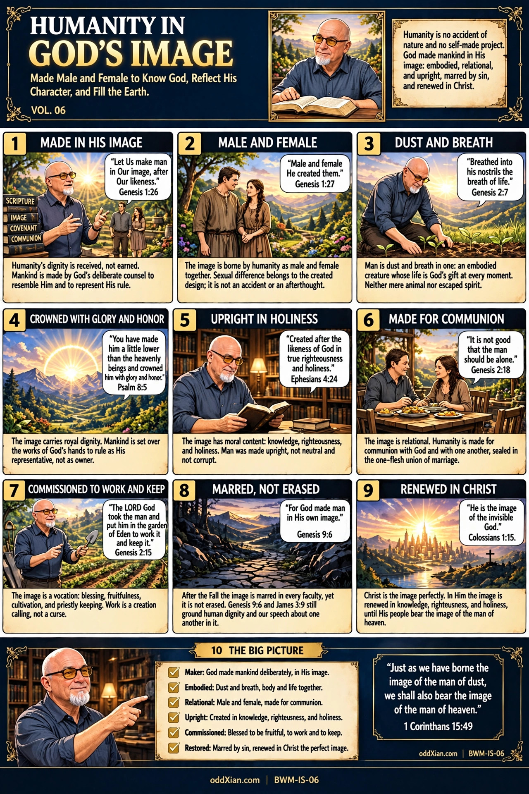

BWM-IS-06 · Humanity in God's Image

The plate, panel by panel
HUMANITY IN GOD'S IMAGE. VOL. 06. Subtitle: Made Male and Female to Know God, Reflect His Character, and Fill the Earth. Framing box: Humanity is no accident of nature and no self-made project. God made mankind in His image: embodied, relational, and upright, marred by sin, and renewed in Christ. Book stack (panel 1): SCRIPTURE, IMAGE, COVENANT, COMMUNION.
- MADE IN HIS IMAGE. Bubble: "Let Us make man in Our image, after Our likeness." Genesis 1:26. Caption: Humanity's dignity is received, not earned. Mankind is made by God's deliberate counsel to resemble Him and to represent His rule.
- MALE AND FEMALE. Bubble: "Male and female He created them." Genesis 1:27. Caption: The image is borne by humanity as male and female together. Sexual difference belongs to the created design; it is not an accident or an afterthought.
- DUST AND BREATH. Bubble: "Breathed into his nostrils the breath of life." Genesis 2:7. Caption: Man is dust and breath in one: an embodied creature whose life is God's gift at every moment. Neither mere animal nor escaped spirit.
- CROWNED WITH GLORY AND HONOR. Bubble: "You have made him a little lower than the heavenly beings and crowned him with glory and honor." Psalm 8:5. Caption: The image carries royal dignity. Mankind is set over the works of God's hands to rule as His representative, not as owner.
- UPRIGHT IN HOLINESS. Bubble: "Created after the likeness of God in true righteousness and holiness." Ephesians 4:24. Caption: The image has moral content: knowledge, righteousness, and holiness. Man was made upright, not neutral and not corrupt.
- MADE FOR COMMUNION. Bubble: "It is not good that the man should be alone." Genesis 2:18. Caption: The image is relational. Humanity is made for communion with God and with one another, sealed in the one-flesh union of marriage.
- COMMISSIONED TO WORK AND KEEP. Bubble: "The LORD God took the man and put him in the garden of Eden to work it and keep it." Genesis 2:15. Caption: The image is a vocation: blessing, fruitfulness, cultivation, and priestly keeping. Work is a creation calling, not a curse.
- MARRED, NOT ERASED. Bubble: "For God made man in His own image." Genesis 9:6. Caption: After the Fall the image is marred in every faculty, yet it is not erased. Genesis 9:6 and James 3:9 still ground human dignity and our speech about one another in it.
- RENEWED IN CHRIST. Bubble: "He is the image of the invisible God." Colossians 1:15. Caption: Christ is the image perfectly. In Him the image is renewed in knowledge, righteousness, and holiness, until His people bear the image of the man of heaven.
- THE BIG PICTURE. Checklist: Maker: God made mankind deliberately, in His image. / Embodied: Dust and breath, body and life together. / Relational: Male and female, made for communion. / Upright: Created in knowledge, righteousness, and holiness. / Commissioned: Blessed to be fruitful, to work and to keep. / Restored: Marred by sin, renewed in Christ the perfect image. Closing verse: "Just as we have borne the image of the man of dust, we shall also bear the image of the man of heaven." 1 Corinthians 15:49.
Companion narrative
Humanity in God's Image teaches that human dignity is a received endowment, not an achievement and not a social grant. God made mankind in His own image and likeness (Genesis 1:26-27). The volume stands between BWM-IS-05 (Creation: Very Good), whose panel 5 first states the image, and BWM-IS-07 (The Original Covenant and Human Calling), which takes up the commission covenantally. Doctrinal anchor: the foundational treatise, Part III (Creation), sec. 5.3, "The image and the relational constitution." Confessional anchor: Westminster Confession of Faith 4.2 and 6.2.
Biblical grounding
Genesis 1:26-28 is the foundation text: the divine counsel ("Let Us make man in Our image, after Our likeness"), the creation of mankind male and female, and the blessing and commission that follow. The plate rests no claim on a distinction between the Hebrew pair tselem (image) and demuth (likeness). Genesis 2:7 gives the image its embodied form: formed of dust, animated by God's breath. Genesis 2:18 and 2:23-24 give its relational constitution: aloneness is the one pre-Fall "not good," supplied inside the creation order by the woman and sealed in one-flesh union. Psalm 8:5-6 states the image's royal dignity: crowned with glory and honor, set over the works of God's hands. Ecclesiastes 7:29 states the original moral posture directly: God made man upright. The moral content of the image, knowledge, righteousness, and holiness, is specified where the canon describes the image renewed: Ephesians 4:24 and Colossians 3:10; this is the traditional Reformed reading carried at WCF 4.2. Genesis 9:6 and James 3:9 are the retention texts: after the Fall, the image still grounds the protection of human life and the ethics of speech about other people. Colossians 1:15 identifies Christ as the image of the invisible God; Colossians 3:10 and Ephesians 4:24 describe the renewal of the image in believers; 1 Corinthians 15:49 states the consummation.
Doctrinal derivation
The image is conferred in creation, before any human act, obedience, or achievement (Genesis 1:27). It belongs to humanity as male and female, not to one sex or to the individual in isolation (Genesis 1:27; 2:18). Its moral content is read back from its renewal texts, the canon's own specification (Ephesians 4:24; Colossians 3:10). It survives the Fall as the ground of dignity and accountability (Genesis 9:6; James 3:9). It is perfectly borne by Christ and restored in Him (Colossians 1:15; 3:10). Consequences: human dignity does not scale with capacity, productivity, or recognition, because its ground is a divine conferral, not a performance. Dominion is representative rule under God, not ownership (Psalm 8:6 read with Genesis 1:28). Work belongs to the image's vocation from creation, so it cannot be a product of the curse (Genesis 2:15 precedes Genesis 3).
Synthesis, labeled as synthesis: that humanity images the triune archetype in its relational constitution is the treatise's framing synthesis (axiom I.2, MEDIUM), not a lexical entailment of Genesis 1:26; panel 6 carries it at that grade. The description of the image-bearer's garden work as priestly (panel 7) rests on the work-and-keep verb pair and its sanctuary associations, and is likewise synthesis, not direct teaching. Limits: a purely functional reading of the image is too narrow for Ephesians 4:24 and Colossians 3:10; a purely structural reading underplays Genesis 2. Bavinck's treatment of the image is registered in the treatise as not yet consulted; no originality claim is made for this volume's arrangement, and Bavinck is cited for nothing here.
Claim register
| Claim | Classification | Primary support | Confidence |
| Mankind is made in God's image and likeness by deliberate divine counsel | Direct teaching | Genesis 1:26-27 | HIGH |
| The image is borne by humanity as male and female together | Direct teaching | Genesis 1:27 | HIGH |
| Humanity is embodied: dust formed and God-breathed | Direct teaching | Genesis 2:7 | HIGH |
| The image carries royal dignity and representative rule | Direct teaching | Psalm 8:5-6 | HIGH |
| The image's moral content is knowledge, righteousness, and holiness; man was made upright | Direct teaching (renewal texts; Ecclesiastes 7:29); original-state formulation is WCF 4.2 | Ephesians 4:24; Colossians 3:10; Ecclesiastes 7:29 | HIGH |
| The image is relationally constituted; humanity is made for communion | Direct teaching; triune-reflection framing is synthesis | Genesis 2:18-24; treatise axiom I.2 | HIGH for the texts; MEDIUM for the synthesis |
| The image is a vocation: fruitfulness, work, and keeping | Direct teaching; "priestly" coloring is synthesis | Genesis 1:28; 2:15 | HIGH; synthesis MEDIUM |
| After the Fall the image is marred in every faculty, not erased | Direct teaching (retention); "every faculty" is the WCF 6.2 formulation | Genesis 9:6; James 3:9 | HIGH |
| Christ is the perfect image; the image is renewed in Him and consummated in the resurrection | Direct teaching | Colossians 1:15; 3:10; 1 Corinthians 15:49 | HIGH |
| Panel 10 summarizes the volume without new claims | Synthesis (summary) | Panels 1-9 | HIGH |